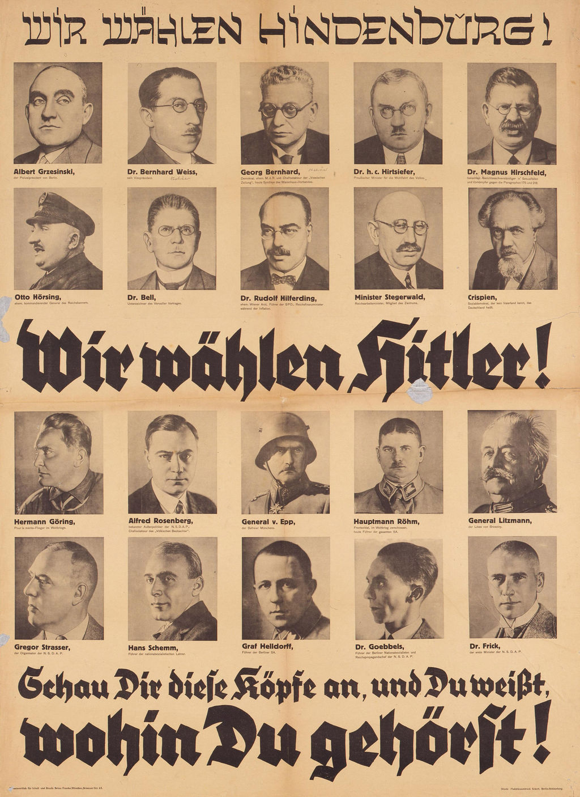

Rassenlehre
Niklas, Immo, Fabian, Magnus
Created: 2021-11-07 So 13:16
Inhaltsverzeichnis
1. Rassenlehre
1.1. Rassentheorien und Rassenhygiene
- „Rassentheorien“ und „Rassenhygiene“ bildeten grundlegende Elemente der nationalsozialistischen Weltanschauung.
- Die meisten dieser Theorien basierten auf einem rassistisch motivierten Antisemitismus, der im ausgehenden 19. Jahrhundert in zahlreichen Publikationen seinen Ausdruck fand.
- So beschrieben Autoren wie Wilhelm Marr und der Brite Houston Stewart Chamberlain das Judentum nicht als Religion, sondern als fremdartige und minderwertige Rasse, welche die Weltherrschaft anstrebte.
- Das Erbgut sollte entscheidend sein für den Wert
- Es ging also nicht um Unterschiede innerhalb der Wirtschaft, der Kultur oder der Politik eines Volkes, sondern um seine „rassischen“ Eigenschaften, welche man wissenschaftlich nachzuweisen versuchte.
1.2. Rassenlehre gegen Juden
- Juden stellten für Nazis den Hauptfeind der arischen Rasse dar
- Sie erklärten diese zu einer eigenen Rasse
- unterstellten ihr, einen schädlichen Einfluss auf die Qualität der arischen Rasse zu haben.
- Daher müsse sie vernichtet werden.
2. Geschichte
- 17. Jahrhundert bis gegen Ende des 20. Jahrhunderts
- 19. Jahrhundert
- (Biologie) auf den Menschen bezogene Rassenkonzepte
- Biologie der Art Homo sapiens
3. Verbreitung

3.1. Propaganda Plakate
- „Arier“ gegen Jude
3.2. Verteilung 12 „Gebote“ zur Rasseneinhaltung:
- z. B. „Haltet das deutsche Blut rein“
- Ziel: religiöser Status
- Die zwölf Gebote wurde auf faltblätter Verteilt
3.3. Verbreitung im Schulunterricht
- eigenes Fach
- Rassenatlas
4. Aktuell
- Immernoch Aktuell
4.1. Atilla Hildman

4.2. Aussagen
- Zitate:
- Ich möchte kein Verfahren in Deutschland, es währe nicht fair. Es ist kein Deutsches Verfahren.
- Theorien:
- Juden hätten den Holocaust mitfinanziert